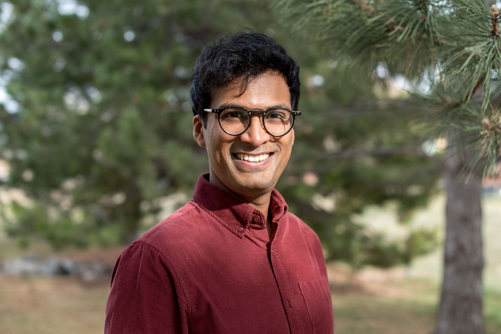
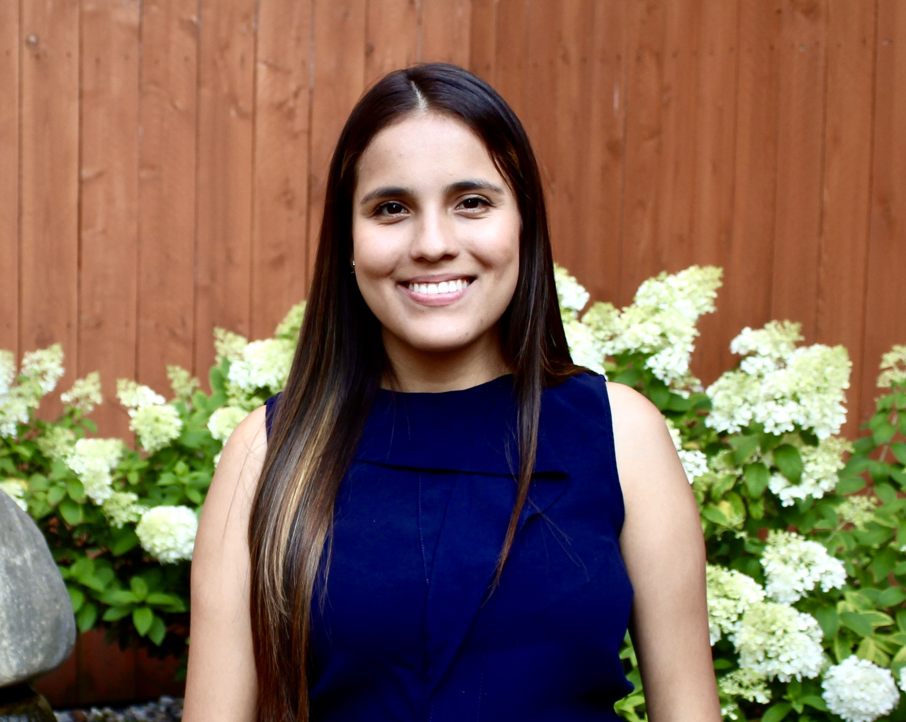
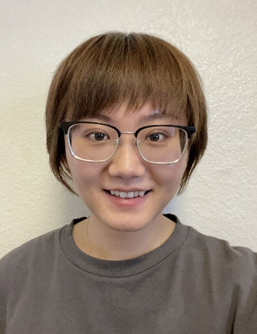
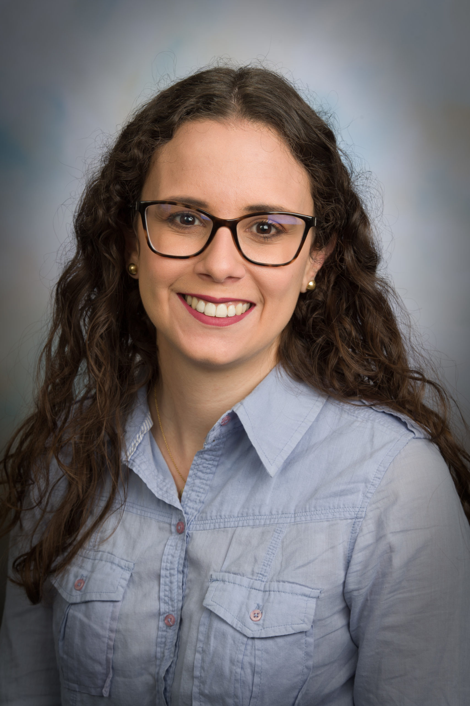

Opening Speaker
htmltools::HTML(Spiro Stefanou

)
Bio: Spiro Stefanou is the Administrator of the Economic Research Service. He provides leadership and guidance for the agency research, analytical, and technical operations. Since 2015, Dr.Stefanou was a Professor of Economics in the Food and Resource Economics Department at the University of Florida. Dr.Stefanou received his Ph.D.in Agricultural Economics from the University of California, Davis, his M.S. in Agricultural and Resource Economics from the University of Maryland and a Bachelor of Arts in Anthropology from George Washington University.
Presenters
htmltools::HTML(Michael Adjemian

)
Bio: Michael K. Adjemian is a Professor in the Department of Agricultural and Applied Economics at the University of Georgia. Previously, he worked as a Senior Research Economist at the USDA Economic Research Service and as a Senior Economist at the White House Council of Economic Advisers. Mike received a Ph.D.in Agricultural and Resource Economics from the University of California at Davis in 2009. His research is focused on the economics of commodity markets, international trade, and U.S. agricultural policies. His research has been published in leading field journals, including the American Journal of Agricultural Economics, Applied Economic Perspectives and Policy, Food Policy, and the Journal of Commodity Markets. Mike is a Senior Fellow at the Rennes School of Business Center for Unframed Thinking, a consultant for the Commodity Futures Trading Commission and the State of Georgias Office of Planning and Budget, and serves on the board of directors for the Council on Food, Agricultural and Resource Economics (C-FARE). Since 2019, Mike has led and authored the university-wide annual UGA Economic Impact Report.
Presentation Title: Decomposing Food Price Inflation into Supply and Demand Shocks
Abstract: Recent food price inflation in the United States is comparable to historically sharp increases observed in the 1970s and early-1980s. Many factors are likely responsible, including supply chain backups and increased production costs brought on by the Covid-19 pandemic and its aftermath, weaker global markets for wheat and fertilizers following Russias invasion of Ukraine, and the strong aggregate demand driven in part by historically-large U.S. government stimulus efforts. Using a newly-developed technique to identify the contributions supply and demand shocks make to food price inflation over time, we find that while about 77 percent of the observed food category-level food price changes from the early-1990s up to the pandemic period were due to supply shocks (with the demand side taking up the remaining 23 percent), recent inflation is characterized by demand shocks to a far greater degreeabout twice as much as in the past. We show how decompositions like these, particularly when accomplished using food price data from local markets, can help target inflation-reducing interventions. In addition, we exploit the national price data to identify important contributors to inflation from both sides of the market.
htmltools::HTML(Ana Aizcorbe
)
Bio: Ana Aizcorbe is a research economist at the Bureau of Economic Analysis (BEA), where she conducts research into price index and other measurement issues. Prior to this, she served as BEAs chief economist where she initiated a Health Satellite Account that allows one to identify the drivers underlying the cost of treating diseases. Dr.Aizcorbe also held positions as an ASA/NSF/BLS research fellow, staff economist at the Federal Reserve Board, visiting fellow at The Brookings Institution, and a research economist in the Bureau of Labor Statistics. She has published a book titled A Practical Guide to Price Index and Hedonic Techniques and numerous articles on the theoretical issues underlying price measurement, with empirical applications to the high-technology and service sectors. Dr.Aizcorbe has a B.A. degree in economics from Georgetown University, and a Ph.D.in economics from Boston College.
Presentation Title: Personal Consumption Expenditures Price Index for Food Purchased for Off-Premises Consumption
Abstract: This presentation will provide an introduction to the data sources and methods used to construct the price index that the Bureau of Economic Analysis uses to deflate personal consumption expenditures on the Food purchased for off-premises consumption in the national accounts.
htmltools::HTML(Julian Alston

)
Bio: Julian Alston is a distinguished professor emeritus in the Department of Agricultural and Resource Economics at UC Davis, known for his work on the economics of agricultural and food policy. His recent projects have emphasized science & technology policy and the economics of agricultural innovation; food & nutrition policy, and the global challenges of poverty, malnutrition, and obesity; and wine economics. He has published numerous research articles, chapters, and books on these subjectsincluding The Effects of Farm and Food Policy on Obesity in the United States (2017) with Abigail Okrent.
Presentation Title: The Incidence of Farm Commodity Price Increases on U.S. Food Consumers: Consequences for Healthy Diets, Obesity, and Consumer Welfare A First Look
Abstract: In this paper in process we extend the equilibrium displacement model developed by Okrent and Alston (2012) to allow for multiple cohorts of consumers, disaggregated according to their wealth status, and update the parameters using new data and revised estimation procedures. We use that model to examine the effects of exogenous changes in M farm commodity prices, and hence in retail prices of N food products, on per capita quantities demanded by each group of consumers. We translate those changes in per capita demanded of the various food products into measures of healthy eating (the Healthy Eating Index), obesity (BMI and its social cost), and consumer welfare (compensating variation). The exogenous changes in prices we consider are specified to represent both (1) recent past changes in U.S. farm commodity prices associated with specific causes, and (2) alternative scenarios for future global farm commodity markets reflecting alternative projections of climate change or projections of farm productivity growth, relative to a baseline for specific future years. An overview of the study and preliminary results will be presented at the workshop.
htmltools::HTML(John Baffes

)
Bio: John Baffes
Presentation Title: XXX
Abstract: XXX
htmltools::HTML(Jude Bayham

)
Bio: Jude Bayham
Presentation Title: XXX
Abstract: XXX
htmltools::HTML(Anne Byrne

)
Bio: Anne Byrne is a research agricultural economist in the Food Markets Branch. Her research focuses on how consumers access and afford food. She analyzes economic features of the food landscapeincluding retail food markets, food banks, and other private food assistance servicesand geographic variation of food availability. She also analyzes consumer food behavior, particularly among low income and resource limited households, including use of food assistance and substitution across products and outlets. Her work has been published in the American Journal of Agricultural Economics, Food Policy, and Applied Economic Perspectives and Policy, among other outlets.
Presentation Title: Food Prices from the Consumers Point of View
Abstract: This interactive presentation explores the customer experience of food prices. It looks at how customer experiences become translate into raw data and how raw data translates into overall measures of food prices. Using food price artifacts to build price change measures, we explore how staple product prices change, the emergence of new products and stores, geographic variation in prices, and issues of data quality.
htmltools::HTML(Metin akr

)
Bio: Metin akr is a professor in the Department of Applied Economics at the University of Minnesota. Dr.akr conducts research in food and agricultural markets and competition, consumer economics, and applied index number theory. He teaches courses in microeconomics, business strategy, managerial economics, and industrial organization. His recent research focuses on price analysis, the economic effects of changes in the food retailing landscape, and investigating the causes and consequences of recent food price inflation. His work is published in leading journals such as the American Journal of Agricultural Economics, Journal of Retailing, and Food Policy and received awards, including a Quality of Research Discovery Award from the American Agricultural Economics Association. Dr.akr is a member of the AAEA and served in several different positions in the Association. Currently, he serves as area editor for the Journal of the American Agricultural Economics Association.
Presentation Title: Perspectives on High Retail Food Prices during 2020-2022
Abstract: The recent food price inflation has sparked lively debates globally in media accounts, policy circles, and academics. A large body of literature has emerged across several fields of economics. However, each study typically focuses on a single or subset of causes, indicating that factors contributing to the recent food price inflation are broadly ranging and complex. This paper provides a comprehensive synthesis of what we learned about the major causes of high food prices in 2020-2022 in the United States and how they differ from those identified in prior food price hikes during the Great Recession of 2008. To provide context, we first discuss stylized facts about the U.S. food industry structure and previous empirical evidence on economy-wide drivers of high food prices. We then survey the literature on drivers of food price surges observed since 2020. We document that price surges in 2020-2022 have some unique factors primarily stemming from the consequences of the COVID-19 pandemicspecifically, U.S. fiscal support and money supply growth are the leading causes. Like in 2008, high oil prices were not a major factor; while high commodity prices might have affected recent food price hikes, it was not found to be one of the primary factors as in 2008. Inflation expectations due to high oil prices, which played a significant role in 2008, were also not found to be an essential cause. Furthermore, the evidence on the role of factors directly related to retailers conduct, such as sellers inflation or price gouging, is mixed. Considering our synthesis, we identify policy priorities and gaps where future research is needed.
htmltools::HTML(Lauren Chenarides

)
Bio: Lauren Chenarides
Presentation Title: XXX
Abstract: XXX
htmltools::HTML(Catherine Cullinane-Thomas

)
Bio: Catherine Cullinane-Thomas is an agricultural economist in the Diet, Safety, and Health Economics Branch in the Food Economics Division (FED) of the USDA Economic Research Service. She is a member of the ERS household and retail scanner data team. Cathys research is focused on increasing data quality and usability, empowering data users, and building community. Prior to joining ERS in 2022, Cathy worked as an economist with the U.S. Geological Survey, researching how public lands, natural resource use, and federal programs and investments impact regional economies and livelihoods. Cathy has expertise in regional economics, simulation modeling, survey development, and data modeling and visualization. Cathy earned an M.S. degree in agricultural and resource economics and a B.S. degree in mathematics from Colorado State University.
Presentation Title: Circana retail and household scanner data an overview of ERS data holdings and uses
Abstract: ERS acquires Circana (formerly IRI) retail and household scanner data for use in food economics research. This presentation will describe Circana scanner data resources, ERS add-on resources including store weights and ERS Food Purchase Group (EFPG) classifications, data uses, and opportunities for collaboration.
htmltools::HTML(Doug Edmonds

)
Bio: Doug Edmonds
Presentation Title: XXX
Abstract: XXX
htmltools::HTML(Leo Feler

)
Bio: Leo Feler is Chief Economist at Numerator and a visiting economist at the Federal Reserve Bank of Chicago. At Numerator, Dr.Feler provides thought leadership and analyses on the US economy and the state of the US consumer to C-suite executives of leading CPGs and retailers and to Wall Street analysts. At the Federal Reserve, Dr.Feler works with a team of economists to nowcast retail sales and inflation using Numerators household panel data. Dr.Feler previously served as senior economist at the UCLA Anderson School of Management and taught MBA-level courses on economic forecasting and emerging markets. Prior to that, Dr.Feler was an assistant professor at Johns Hopkins University and a consultant with Boston Consulting Group. Dr.Feler has served as an expert witness on commercial litigation and regulatory matters and has casework experience in mergers & antitrust. He received his PhD in economics from Brown University, his MA in International Policy from Stanford University, and his BA in Economics and International Relations from Stanford University.
Presentation Title: Using Panel Data on the Everyday Purchases of 150,000 Representative US Households to Measure Consumer Behavior in Real-Time
Abstract: Numerator collects purchase data from receipts, emails, and linked loyalty accounts from a static panel of 150,000 representative US households. This data is available for free for academic use to researchers affiliated with US universities. Using this data, Numerator can track the US Census Bureaus Advance Monthly Sales for Retail and Food Services report. Whereas the US Census report is top-down (based on surveying retailers about their revenues), Numerators analysis is bottom-up (based on receipts and purchase data from verified consumers). This difference allows Numerator to segment changes in retail sales by consumer demographics, looking at the behaviors of low, middle, and high-income consumers, by race/ethnicity, by generation/cohort, and by region of the country. This difference also allows Numerator to look within retailers to see what consumers are buying (e.g., essentials vs.discretionary purchases, brand name vs.private label items). This session will also cover additional topics that researchers may be interested in when using Numerator data, for example, tracking the purchases of SNAP/WIC recipients as SNAP/WIC benefits change and tracking how consumers adjust to food inflation.
htmltools::HTML(Raghav Goyal

)
Bio: Dr.Raghav Goyal is an Assistant Professor at Louisiana State University (LSU). As an early-stage researcher and new investigator, his research focuses on applying machine learning techniques in applied economics, forecasting, price analysis, and data analytics. Dr.Goyals work, which regularly incorporates econometric and computational programming methods, has been published in leading field journals.
Presentation Title: XXX
Abstract: XXX
htmltools::HTML(Matthew MacLachlan

)
Bio: Matthew MacLachlan is an assistant professor of veterinary business and entrepreneurship at Cornell Universitys Center for Veterinary Business and Entrepreneurship. From 20162023, he contributed to the ERSs forecasts in the Markets and Trade and Food Economics Divisions. His research focuses on the methods used when assessing economic issues related to food markets, risk, animal health, and the public management of biological hazards.
Presentation Title: Research and development of food price forecastingoptimal selection of leading indicators
Abstract: The advent of COVID-19 ended an era of stable US retail food prices that followed the world food price crisis of 20102012. Pandemic-related disruptions, avian influenza outbreaks, and the Russia-Ukraine war drove 2022 food-at-home inflation to its highest rate since 1974 (11.4%). In 2023, US Department of Agriculture (USDA) economists responded to these changes by updating food price forecasts with statistical learning protocols to select time-series models and prediction intervals to convey their uncertainty. We characterize the public good provided by these adaptive inflation forecasts and enhance them by continuously selecting exogenous variables, improving their precision and explanatory power. The all-items-less-food-and-energy (core) index helps predict food prices until 2017; then, the money supply, wholesale-food prices, and food service wages help generate optimal forecasts. The strong relationships between food prices and other prices and the money supply indicate the sensitivity of food markets to macroeconomic forces and government policy choices.
Presentation Title: The landscape and challenges of nationally representative forecasting
Abstract: The federal government provides many publicly available and internal forecasts and projections, which aid diverse stakeholders. The USDA - Economic Research Service economists contribute specialized expertise on future economic conditions along the food supply chain. These include the farm economy, production, storage, intermediate markets for agricultural inputs, trade and transportation, and retail food markets. The forecasted systems complexity and overlap with other USDA agency missions motivate interagency collaboration, notably with the Office of the Chief Economist. The diversity of objectives, available data, and audiences have historically encumbered standardization. However, advancements in statistical methods, operational practices, and computation resources provide opportunities for harmonization to the extent possible. This presentation introduces leaders from government, academia, and industry in identifying and implementing best practices to enhance the accuracy and informativeness of forecasts and projections.
htmltools::HTML(Kaitlyn Malakoff

)
Bio: Kaitlyn Malakoff is a PhD Student in the School of Sustainability at Arizona State University and a 2023 NMFS-Sea Grant Marine Resource Economics Fellow studying the effects of international trade policies on seafood supply chains in the United States. Other research topics include examining the role of seafood in resilient and equitable food systems and leveraging spatial data to study protected land management.
Presentation Title: Tailoring retail food price forecasts to specific markets: lessons from U.S. seafood
Abstract: Retail food price forecasts inform expectations and budgeting for stakeholders, including Federal nutritional assistance programs, consumer groups, and industry. We focus on the United States Department of Agricultures (USDA) fish and seafood price forecast. Following USDAs current practices, we use a time series seasonal autoregressive integrated moving average (SARIMA) modeling approach with model selection to determine how seafood forecasts can be improved using more refined retail price series. We find substantial reductions in expected SARIMA forecast error of up to 51% and 31% as measured by mean absolute error when disaggregating by product form and species, respectively, suggesting that the aggregate fish and seafood forecast does not appropriately proxy for more refined product prices. We then allow for the inclusion of exogenous price determinants in a SARIMAX model framework and compare forecast performance to the SARIMA approach for different types of seafood. Preliminary results suggest that models that minimize information loss include exogenous price determinants, that the selected covariates differ by species and product form, and that a SARIMAX approach can reduce forecast error.
htmltools::HTML(Aparna Mathur

)
Bio: Aparna Mathur
Presentation Title: XXX
Abstract: XXX
htmltools::HTML(Seth Meyer

)
Bio: Seth Meyer
Presentation Title: XXX
Abstract: XXX
htmltools::HTML(Mary Muth

)
Bio: Dr.Mary K. Muth is Senior Director, Food Economics & Policy at RTI International. She conducts research to analyze and evaluate the impacts of policies, regulations, and other initiatives in the areas of nutrition, food safety, food waste, food pricing, food labeling, and food reformulation. She is lead author of the book Using Scanner Data for Food Policy Research published by Elsevier Academic Press and has collaborated with the U.S. Department of Agricultures Economic Research Service to assess and document scanner data, conduct analyses of scanner data, and create the Food-at-home Monthly Area Prices (F-MAP) data product. She received her PhD from North Carolina State University, masters degree from Cornell University, and bachelors degree from University of California at Davis.
Presentation Title: Sources and Analyses of Food Label Data from Proprietary Sources
Abstract: Store and household scanner data include product attributes at the barcode level that can be used to classify products for conducting analyses of food prices at a disaggregated level. For example, proprietary scanner data contain information on product attributes such as package type, whether the product is organic, and nutrient content. For some applications, additional or more specific product attributes from product labels may be desired and can be obtained from proprietary sources. The sources and content of proprietary label data and examples of analyses using the data will be presented.
htmltools::HTML(David Ortega

)
Bio: David L. Ortega is a professor and the Noel W. Stuckman Chair in Food Economics and Policy at Michigan State University. His research program focuses on understanding consumer, producer, and agribusinesses decision-making to better inform food policies and marketing strategies. Dr.Ortega provides timely analysis of forces and events affecting the agricultural and food sector. He has been called to provide expert testimony before federal and state agencies, including the U.S. Senate and House agriculture committees. He is a frequent contributor to food price inflation reporting at The New York Times and NPR, and is regularly interviewed by prominent media outlets, including ABC News, NBC News, PBS, USA Today, CNN, PBS, Forbes, Politico, The Wall Street Journal, Financial Times, Newsweek, and the Detroit Free Press, to name a few. Dr.Ortega earned his Ph.D.in Agricultural Economics from Purdue University.
Presentation Title: Shocks, Supply Chain Disruptions and Food Prices
Abstract: From 2021 to 2022, U.S. consumers experienced the largest annual increase in food prices in 40 years, posing significant challenges, particularly for low-income households. This keynote address delves into the multifaceted factors behind this surge, including the COVID-19 pandemic, the Russia-Ukraine conflict, climate change, and animal diseases. It will also examine how these issues have disrupted the food supply chain and impacted consumer spending. The presentation will highlight the complexity of isolating individual effects on retail food prices and discuss the overall impact of food price inflation on consumers. Researchers, policymakers, and industry stakeholders will gain valuable insights to enhance discussions on food price inflation, improve forecasting, and develop strategies to strengthen the resilience of the food supply chain amid ongoing global challenges.
htmltools::HTML(Steve Reed

)
Bio: Steve Reed
Presentation Title: XXX
Abstract: XXX
htmltools::HTML(Francisco Scott

)
Bio: Francisco Scott is an economist at the Economic Research Department of the Federal Reserve Bank of Kansas City. His current research focuses on agricultural industrial organization, regional economics, and policy. Francisco joined the Bank in 2021 after completing his Ph.D.in Agricultural Economics at Purdue University.
Presentation Title: Identifying passthroughs of shocks to food inflation: some theory, some evidence
Abstract: The presentation focuses on the challenges of identifying passthroughs of economic shocks to food inflation. I derive the main drivers of food inflation from first principles and review the conditions for econometric identification of each component. I also illustrate the complexity of the econometric exercise with two empirical examples. The first concerns the passthrough of agricultural commodity prices to food prices and the second illustrates the effect of shock to processing capacity to beef inflation.
htmltools::HTML(Aaron Smith

)
Bio: Aaron Smith is the DeLoach Professor of Agricultural and Resource Economics at the University of California, Davis, where he has been since 2001. Originally from New Zealand, he earned his PhD in Economics from the University of California, San Diego. His research addresses economic and policy challenges related to agriculture, energy, and the environment. He has over 50 publications in refereed journals, including outlets such as the Review of Economics and Statistics, the Journal of Econometrics, the American Journal of Agricultural Economics, and Proceedings of the National Academy of Sciences. His research has won the Quality of Communication, Quality of Research Discovery, and Outstanding American Journal of Agricultural Economics Article Awards from the Agricultural and Applied Economics Association and the Quality of Research Discovery Award from the European Association of Agricultural Economists. He is the cluster lead for socioeconomics and ethics in the AI Institute for the Food System (AIFS).
Presentation Title: XXX
Abstract: XXX
htmltools::HTML(Megan Sweitzer
)
Bio: Megan Sweitzer is a research agricultural economist in the Food Economics Division of the USDA Economic Research Service. She leads the ERS Food Price Outlook, and her research focuses on food price forecasting, food price data development, and the intersection between food prices and consumer purchasing decisions. She has also specialized in developing and using scanner data for food economics research. She previously held roles conducting economic research and producing federal statistics for the Federal Energy Regulatory Commission and the U.S. Bureau of Labor Statistics.
Presentation Title: Food-at-Home Monthly Area Prices: Validating price indexes constructed from retail scanner data
Abstract: The USDA Economic Research Service (ERS) developed the Food-at-Home Monthly Area Prices (F-MAP) data product to provide detailed U.S. food price data for economic research and analysis of food prices, consumer purchasing patterns, and the food environment. F-MAP provides monthly food price data over time, across food groupings, and across geographic areas and includes monthly prices for 90 food-at-home (FAH) categories across 15 geographic areas of the United States. These data are constructed using retail scanner data, which offer extensive and detailed data on spatial and temporal food price variation but are collected from a nonprobability sample of retailers. To understand how prices reported by stores in the retail scanner data compare to established sources of retail price data, we benchmark the F-MAP to the Consumer Price Index (CPI) for major food categories and regions. We find strong correlation between the CPI and the scanner data-based price index for all food at home across all geographies but find heterogeneity in the correlations across regions and food categories.
Breakout Session Mediators
htmltools::HTML(James MacDonald

)
Bio: James M. MacDonald is Research Professor in the Department of Agricultural and Resource Economics at the University of Maryland. Prior to joining the University in 2020, he was a senior economist and branch chief at the Economic Research Service of the U.S. Department of Agriculture, where he supervised work on agricultural productivity, technology adoption, and farm performance. His own research focuses on competition in agribusiness industries, and on the changing structure and organization of the farm sector. A Fellow of the Agricultural and Applied Economics Association, MacDonald received a Ph.D.in economics from the State University of New York at Buffalo and a bachelors degree from Siena College.
htmltools::HTML(Abby Okrent

)
Bio: Abby Okrent
htmltools::HTML(Simon Somogyi
)
Bio: Simon Somogyi is a professor at Texas A&M University in the Department of Agricultural Economics, where he holds the Dr.Kerry Litzenberg Endowed Chair in Sales & Economics and serves as the Director of the Weston Agri-food Sales Program. He is the lead author of the semi-annual Texas A&M Food Price Predictor and was previously a co-author of Canadas Food Price Report, an annual publication forecasting Canadian food prices. His teaching and research focus on food and agribusiness sales and distribution management, food price forecasting, and advancements in smart and virtual food retailing.
htmltools::HTML(Chen Zhen

)
Bio: Chen Zhen develops policy-relevant structural models of consumer food behavior estimated with large-scale household and retail scanner data. The overarching goal of his research is to promote the use of these high-dimensional, yet practical, models to predict outcomes of innovative nutrition policy proposals. He has published extensively on issues such as habit formation in beverages and tobacco, unintended consequences of sugar-sweetened beverage (SSB) taxes, and the efficiency of volume- vs.calorie-based SSB taxes. His research on SSB taxes has been featured in New York Times, NPR, and other national and local media. His current research includes panel food price indexes, SSB restrictions in the Supplemental Nutrition Assistance Program, food demand in Sub-Saharan Africa, unhealthy food taxes and healthy food subsidies, shelf-nutrition labeling, and the healthy retail food environment.
Masters of Ceremonies
htmltools::HTML(Ricky Volpe
)
Bio: Ricky Volpe is an associate professor in the Agribusiness Department at Cal Poly.Ricky teaches courses on food retail and supply chain management, transportation and logistics, and data analysis. He also maintains an active research agenda using a variety of large data sets to study issues related to market structure, firm performance, food prices, consumers food choices, and health outcomes. He also works closely with industry leaders in food retailing, wholesaling, and distribution to facilitate collaboration on public-private partnerships, student internships, and scholarships. Ricky received his Ph.D.in Agricultural and Resource Economics from UC Davis in 2010. He then spent four years working as an economist at the USDA Economic Research Service in Washington, D.C. There he researched a variety of topics, including food price formation, competitiveness in the food industry, and the healthiness of grocery purchases in the U.S. Ricky was also responsible for forecasting retail food price inflation at the national level.
htmltools::HTML(Megan Sweitzer
)
Travel Grant Recipients
htmltools::HTML(Ifedotun Aina
)
Bio: Ifedotun Aina is a postdoctoral research fellow at the School of Economics, University of Cape Town, South Africa. He conducts research on food price analysis and resource management, combining economic and environmental modelling methods. His research intersects environmental economics, agricultural economics, and behavioral economics, applying econometric techniques and applied economic. Ifedotun was a visiting scholar at the International Institute for Applied Systems Analysis (IIASA) in Austria, and a recipient of several awards from the South African National Research Foundation and the European Unions Intra-Africa academic mobility scheme.
htmltools::HTML(Love Ayinde

)
Bio: Love Jesjuwonlo Ayinde is an incoming masters student in data science and analytics at the University of Missouri. He recently graduated from Ohio Wesleyan University with a double major in Computer Science and Quantitative Economics. He mentors students as a Student Success Coach with AmeriCorps, teaching Mathematics and Computer Science. He also works with data analysis and strategic planning, including analyses of prices and sell-through rates.
htmltools::HTML(Bingyan Dai

)
Bio: Bingyan Dai is a Ph.D.student in Applied Economics at Cornell University. She also holds a MS in Applied Economics and Management from Cornell University. Before going to Dyson School in 2019, she received her Bachelor of Economics in Finance and Bachelor of Management in Information Resource Management from Sichuan University. Dai conducts research in agricultural and resource economics, with special interests in bio-economics, decision-making under uncertainty, and supply chain management.
htmltools::HTML(Jungkeon Jo
)
Bio: Jungkeon Jo is a Ph.D.candidate in the Department of Agricultural and Applied Economics at the University of Georgia. His research is mainly in the areas of the economics of commodity markets, agribusiness, agricultural supply chains, and food price inflation. He investigates shocks to agricultural commodity production and supply chains, assessing their impact on the commodity market and the broader economy. Jungkeon Jo is also exploring how recent food price fluctuations, driven by demand and supply shocks, disproportionately affect U.S. households based on income levels. He aims to pursue a career in academia to continue his research.
htmltools::HTML(Pratyoosh Kashyap 
)
Bio: Pratyoosh Kashyap is an agricultural economist whose work focuses on applying economic theory and quantitative methods to examine issues in the food systems. His postdoctoral research at Virginia Tech will employ a mixed methods approach to assess the distinct needs of Black, Hispanic, and Tribal agricultural producers in the United States around accessing wholesale food markets. In his doctoral research, Pratyoosh studied relationships between the policy environment, community resources, and the adoption of universal free school meal programs and the Farm to School program in the U.S. Further, he conducted a countrywide consumer survey to examine the welfare implications for the pork market resulting from an African Swine Fever outbreak in the U.S. as well as the impact that different information sources may have on the outcomes. Prior to his PhD, Pratyoosh worked in India with public and international institutions where his research focused on agricultural and livestock value chains development.
htmltools::HTML(Mengxue Li

)
Bio: Mengxue Li is in her 1st year of the Ph.D.program in Integrative Public Policy and Development at Tuskegee University. Her current research focuses on the application of machine learning algorithms to time series forecasting, particularly in the domain of food demand. Her ongoing research project is a food pantry project that aims to successfully forecast household visits to food pantries, understand food demand at Alabama food pantries, and benefit the food pantries operations. Mengxues research is supported by the USDA National Institute of Food and Agriculture. She holds a Masters in finance from China Agricultural University and a Bachelor of Economics from Nanjing Audit University. Before her Ph.D., she worked in investment roles in the finance industry.
htmltools::HTML(Wei Li

)
Bio: Wei Li is a Ph.D.student in the Department of Agricultural Economics at Texas A&M University. After completing her undergraduate studies in Finance at the Southwestern University of Finance and Economics in China, she obtained an M.S. in Economics from Texas A&M University. Wei is expected to complete her Ph.D.in 2026. Her research focuses on international development, global markets, and food security. She investigates how access to resources, information, and opportunities influence household decisions, economic mobility, and human capital investments among rural populations. Currently, she is working on projects that investigate the impacts of irrigation access on migration patterns, as well as examining the role of gender dynamics in agricultural sales and markets within Sub-Saharan African contexts.
htmltools::HTML(Weifang Liang
)
Bio: Weifang Liang is a Ph.D.student at Texas A&M University, majoring in Agricultural Economics. Her research focuses on econometrics, aiming to apply data science techniques in the Agricultural field. She is currently working on developing advanced forecasting models for food prices in the United States. In addition to research, she served as Texas A&M data science student ambassador from 2022 to 2023.
htmltools::HTML(Yiyuan Miao

)
Bio: Yiyuan Miao is a Ph.D.candidate in Food Economics and Management at the Renmin University of China. She is currently doing research on consumer demand and behavioral economics, focusing on facilitating the transition towards sustainable agri-food systems and improving nutrition. She has a visiting scholar at the University of Alberta, Canada. She will present a paper at the 2024 AAEA meeting that discusses stated preferences by comparing cross-cultural surveys.
htmltools::HTML(Rundong Peng

)
Bio: Rundong Peng is an MS student in Agricultural Economics at Purdue University and an incoming PhD student at Michigan State University. With a BS in Machinery Systems Engineering from Purdue, Rundong combines technical expertise with a deep understanding of agricultural economics. His masters thesis focuses on analyzing cointegration in high-dimensional price series, providing valuable insights into the interconnectedness of hog markets in China. Rundong has actively participated in research projects, including estimating sparse VAR/VECM models using penalized least squares to investigate pork production in China and assessing drivers of fertilizer price spikes in Africa through panel data. His research aims to optimize production agriculture and enhance market efficiency.
htmltools::HTML(Fei Qin
)
Bio: Fei Qin is currently working as a postdoctoral research scholar at the Morrison School of Agribusiness at Arizona State University. She earned her Ph.D.in Agricultural Economics from Purdue University in 2023. Her primary research interests lie at the intersection of agricultural and food economics, industrial organization, and development economics. She has extensive experience in policy evaluation and analyzing large datasets, including retailer and household scanner data, which she leverages to provide insights into the dynamics of the food industry.
htmltools::HTML(Mohammad Rahman
)
Bio: Mohammad Maksudur Rahman is a Postdoctoral Research Associate at the School of Economic Sciences, Washington State University. He earned his Ph.D.in Economics from the same institution in May 2023. He has an undergraduate degree in Development Studies and masters degrees in Agricultural and Applied Economics and Statistics. His primary research interests are agricultural economics, animal disease economics, international trade, and applied econometrics. His research encompasses productivity and efficiency analysis, as well as policy analysis, contributing to a comprehensive understanding of economic dynamics and policy implications. His current projects include studying the impacts of tick-borne diseases on US-Mexico livestock trade, the effects of highly pathogenic avian influenza (HPAI) on global poultry exports, and the determinants of public investment in animal health.
htmltools::HTML(Jiayu Sun
)
Bio: Jiayu Sun is a PhD candidate in Agricultural, Food, and Resource Economics at Michigan State University, and anticipated to graduate in 2024. Her research program uses economics and behavioral theories, complemented by a range of methodological approaches including experimental methods and machine learning techniques, to better understand consumer food choice behavior and decision-making processes. Currently, she is working on using double machine learning methods to evaluate the market dynamic and entry effects in plant-based meat alternatives industry.
htmltools::HTML(Camila Ulloa 
)
Bio: Camila Ulloa is a Ph.D.student in Horticulture and Landscape Architecture at Purdue University. She is dedicated to advancing the goals of the Diverse Corn Belt project, a five-year, multi-disciplinary research initiative. Camila is currently leading the design of surveys specifically tailored for various stakeholders in the thriving agricultural industry in the U.S. She thrives on challenges, particularly those related to addressing the economic viability of technologies and devising effective marketing strategies for diverse stakeholders.
htmltools::HTML(Kelsey Vourazeris

)
Bio: Kelsey Vourazeris is a Ph.D.student in Business Administration (Agribusiness) at Arizona State University. She is slated to graduate in May 2025. Kelsey is currently involved in research projects examining the value of information from improved traceability and dynamic modeling of technology adoption in Controlled Environment Agriculture (CEA). She has also constructed financial models for comparing different technological innovations. Additionally, she instructs advanced undergraduate courses in agricultural policy and engage in community outreach opportunities like volunteering at FFA competitions.
htmltools::HTML(Duoyu Wang 
)
Bio: Duoyu Wang is a Ph.D.Candidate in Agricultural and Resource Economics at Colorado State University. Her research focuses on the economic dynamics of food markets and nutritional outcomes. She has a Masters Degree in Economics from the University of Southern California. Duoyus research examines how pricing and SNAP programs influence consumer behavior and nutritional quality. Her research applies advanced econometric models to explore interactions between consumer choices and policy interventions, aiming to reduce nutritional disparities, particularly among vulnerable populations.
htmltools::HTML(Rebecca Wasserman-Olin

)
Bio: Rebecca Wasserman-Olin is a Ph.D.student in Agriculture and Resource Economics at Colorado State University and the incoming AAEA-GSS Chair-elect for 2024-2025. Her dissertation examines the tradeoffs in supply chains from regional food purchasing policies by public institutions. She holds a B.S. from the University of Wisconsin-Madison and an M.S. from Cornell University, where she studied consumer habits regarding local produce. Rebecca has worked as a community organizer and economic researcher in Minnesota, aiding farmers in integrating conservation into their practices, and as a researcher at Cornell, supporting New Yorks regional food systems.
htmltools::HTML(Shuo Yu

)
Bio: Shuo Yu is a Ph.D.candidate in Agricultural and Resource Economics at the University of California, Berkeley. Her research focuses on the intersection of agricultural policy and environmental economics. In her job market paper, she analyzes the Environmental Quality Incentives Program (EQIP) and its impact on water quality through cover cropping practices. Her innovative approach combines econometric analysis with satellite-derived data to quantify the social value of EQIP. Shuo holds an M.S. in Applied Economics and Management from Cornell University and a B.S. in International Economics and Trade from the University of International Business and Economics.
htmltools::HTML(Jianqiang (Jason) Zhao

)
Bio: Jianqiang (Jason) Zhao is a Ph.D.student in Applied Economics and Management at Cornell University. His current research examines the inter- relationship between US food security, the use of food assistance programs, and food markets. He is also interested in food retailing and sales taxes on food products. Jason received a bachelors degree from the University of Minnesota in Twin Cities and MS in applied economics from Cornell before joining the Ph.D.program.
htmltools::HTML(Siwen Zhou

)
Bio: Siwen Zhou is a Ph.D.student in the Department of Agricultural and Resource Economics at Colorado State University. She earned her B.A. in Public Management from Henan University of Economics and Law and an M.S. in Labor Economics from Shaanxi Normal University in China. Siwens previous research focused on the impact of contemporary issues on Chinas rural poor, particularly concerning childrens health and education, aiming to help underserved populations reach their full potential. Her Ph.D.dissertation explores the determinants and consequences of health disparities and social inequality among U.S. households, with a special focus on household food security. Her research interests span food policy, health economics, immigrant welfare, development economics and labor economics.
Organizing Committee
htmltools::HTML(Lauren Chenarides
)
Assistant Professor, Colorado State University
htmltools::HTML(Matthew MacLachlan
)
Assistant Professor, Cornell University
htmltools::HTML(Megan Sweitzer
)
Agricultural Economist, USDA-ERS
htmltools::HTML(Tas Menezes 
) PhD Student, Colorado State University
Sponsors


Participants
| Name | Institution | |
|---|---|---|
| Abigail M. Okrent | USDA-Economic Research Service | |
| Amanda Tian | Kansas State University | |
| Ana Melissa Perez Castano | University of Minnesota | |
| Andrew E. Anderson | University of Arkansas | |
| Anne T. Byrne | Economic Research Service USDA | |
| Anukul Bhattarai | Virginia Tech | |
| Beatrice Robson | University of Georgia | |
| Bingyan Dai | Cornell University | |
| Camila Ulloa | Purdue University | |
| Catherine M. Cullinane Thomas | USDA Economic Research Service | |
| Dat Q. Tran | EDR | |
| David P. Anderson | Texas A&M University | |
| Derek Farnsworth | University of Florida | |
| Didarul Islam | Virginia Tech | |
| Doo Bong Han | Korea Rural Economic Institute | |
| Duoyu Wang | Colorado State University | |
| Eliana Zeballos | USDA - Economic Research Services | |
| Fei Qin | Arizona State University | |
| George C. Davis | Virginia Tech | |
| Germn Puga | University of Adelaide | |
| Homa Taheri | Indiana University | |
| Jae-hoon Sung | Korean Rural Economic Institution | |
| James M. MacDonald | University of Maryland | |
| Jianqiang Zhao | Cornell University | |
| Jiayu Sun | Michigan State University | |
| Jon C. Phillips | California State Polytechnic University, Pomona | |
| Julian M. Alston | University of California, Davis | |
| Jungkeon Jo | University of Georgia | |
| Kaitlyn L. Malakoff | Arizona State University | |
| Kelsey Vourazeris | Arizona State University | |
| Lauren Chenarides | Colorado State University | |
| Leah Costlow | Tufts University | |
| Lei Xu | The Ohio State University | |
| Lin Lin | Michigan State University | |
| Linjie Wang | Huazhong Agricultural University | |
| Lisa Mancino | USDA, Economic Research Service | |
| Love J. Ayinde, Master in View | University of Missouri, Columbia | |
| Luca Rigotti | Cornell University | |
| M. Arsene J. Agossadou | Texas A&M University | |
| Mary K. Muth | RTI International | |
| Matthew J. MacLachlan | Cornell University | |
| Megan D. Sweitzer | USDA-Economic Research Service | |
| Mengxue Li | Tuskegee University | |
| Michael K. Adjemian | University of Georgia | |
| Mohammad M. Rahman | Washington State University | |
| Olga Isengildina Massa | Virginia Tech University | |
| Pratyoosh Kashyap | Virginia Tech | |
| Rebecca Wasserman-Olin | Colorado State University | |
| Richard J. Volpe, III | California Polytechnic State University | |
| Rundong Peng | Purdue University | |
| Sanghyo Kim | Korea Rural Economic Institute | |
| Sangnyeol Jung | Southwest Minnesota State University | |
| Shamar L. Stewart | Virginia Tech University | |
| Shuo Yu | University of California, Berkeley | |
| Siddhartha S. Bora | West Virginia University | |
| Sihyun Park | The Pennsylvania State University | |
| Simon Somogyi | Texas A&M University | |
| Sionegael Ikeme | Colorado State University | |
| Siwen Zhou | Colorado State University | |
| Sungeun Yoon | University of Florida | |
| Tais C De Menezes | Colorado State University | |
| Tatiana Borisova | USDA | |
| Ujjwol Paudel | Arizona State University | |
| Wei Li | Texas A&M University | |
| Weifang Liang | Texas A&M University | |
| Wenjie Zhan | University of California, Davis | |
| William N. McWilliams | Virginia Tech | |
| Wonseok Lee | Oklahoma State University | |
| Wuit Yi Lwin | Oklahoma State University | |
| Xiaoli L. Etienne | University of Idaho | |
| Xiaoyong Zheng | North Carolina State University | |
| Yiyuan Miao | Renmin University of China | |
| Yong Liu | Texas A&M University |